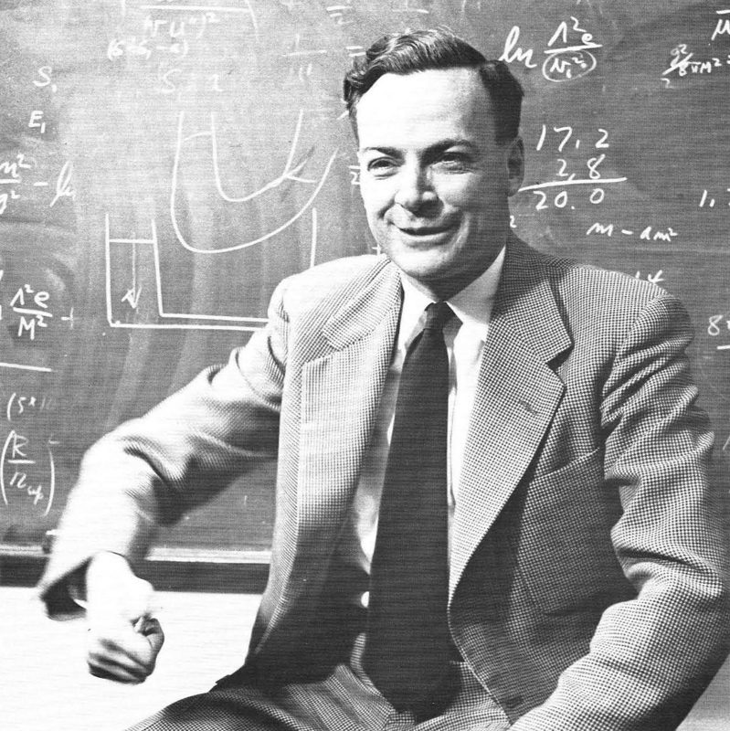
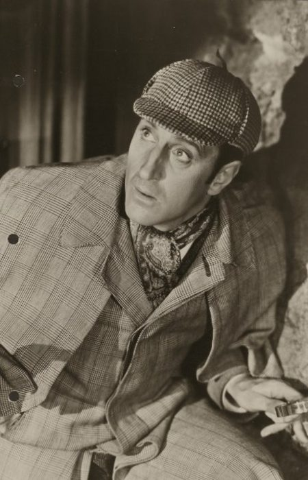
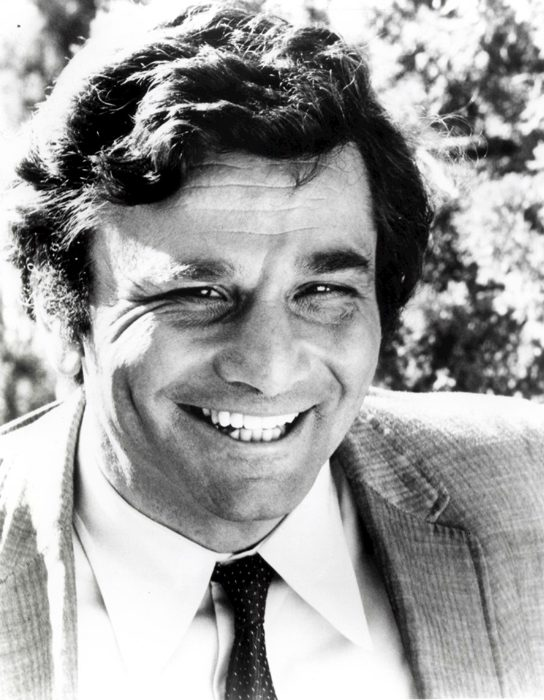
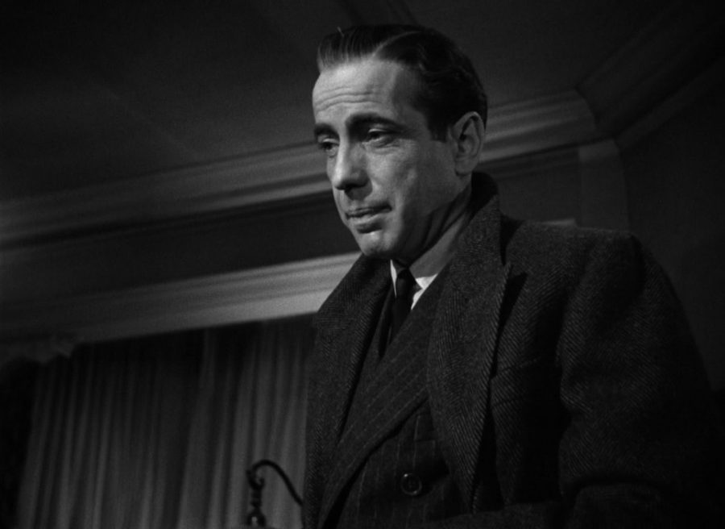
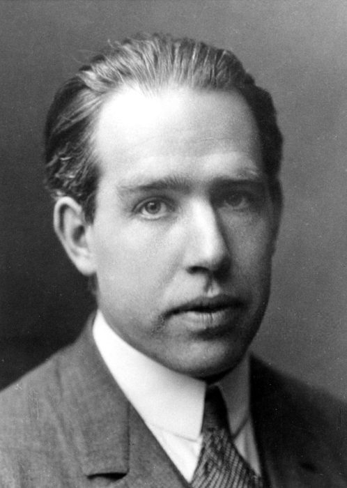
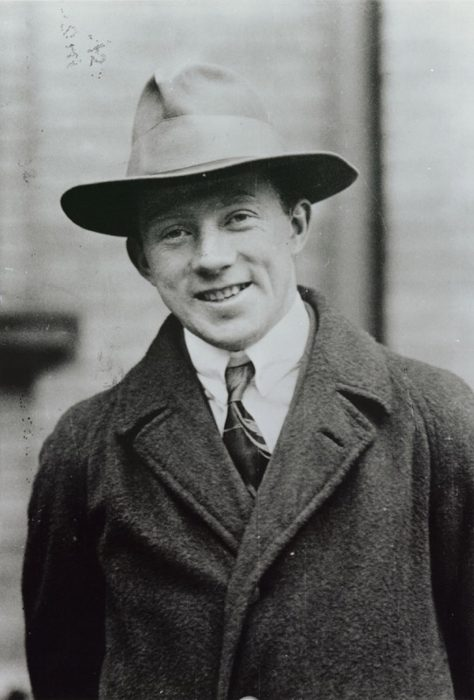
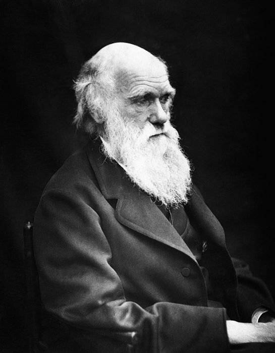
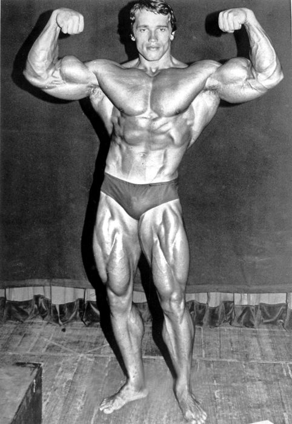

这一章在做什么
全书第一段费曼的录音。作者问的还是那个问题：当科学家要不要有「特别的东西」。费曼的回答分成两截，中间插着作者和邻居看福尔摩斯电影的一段。
斜体是口语实录，句子散，别逐字抠，抓住两个比方：侦探，健美运动员。最后两段是作者自己的反应：先松一口气，再发现新的麻烦。

费曼在黑板前，1959 年。这一章第 2 段写的是 1981 年他的办公室：陈设简单，黑板上写满了式子和费曼图。
作者不详，公有领域，维基共享资源 背景：作者默认你知道的事
这一章提到的侦探、电影、物理学家，美国读者都是从小听熟的。
费曼的第一个比方：科学家像侦探
侦探
现场留下的线索
琢磨、推理
当时发生了什么
案发时他不在场
科学家
实验给出的结果
琢磨、推理
自然是什么样
没人能直接看到
本站示意图。第 8 段费曼的比方：两种人干的是同一种活，都是从线索倒推。
第 7、8 段是这个比方。要点在 worry 和 think 的区别：光发愁不算思考，科学家是拿着线索一步步搭出一个说法。
四个侦探，两种类型
作者听完，脑子里过了一遍他看过的侦探。四个名字美国读者都认识：
福尔摩斯 Sherlock Holmes 柯南·道尔笔下的天才侦探，看一眼就推出一切。电影里的名台词 Elementary 意思是「这太简单了」。
科伦坡 Columbo（书里拼成 Colombo） 1970 年代电视剧里的洛杉矶警探。旧风衣，看着糊里糊涂，其实什么都没漏掉。
洛克福德 Jim Rockford 电视剧 The Rockford Files（1974–1980）里的私家侦探。住拖车，常挨揍，常收不到钱。
萨姆·斯佩德 Sam Spade 小说和电影《马耳他之鹰》（The Maltese Falcon）里的私家侦探，靠街头经验吃饭的硬汉。

Basil Rathbone 扮演的福尔摩斯，1939 年的宣传照。作者和邻居每周五看的就是他。
20th Century Fox，公有领域，维基共享资源 
Peter Falk 扮演的科伦坡，1973 年。
NBC Television，公有领域，维基共享资源
The Rockford Files 剧照，1977 年。右边是 James Garner 扮演的洛克福德。
NBC Television，公有领域，维基共享资源 
Humphrey Bogart 扮演的萨姆·斯佩德，《马耳他之鹰》1941 年预告片。
预告片截图，公有领域，维基共享资源
天才型
Sherlock Holmes
「我能行，因为我比谁都聪明」
普通人型
Rockford、Columbo、Sam Spade
磕磕绊绊，照样破案
盖尔曼
费曼
作者
穿着说话像蓝领
结果当晚作者去借的，偏偏是福尔摩斯的片子。
本站示意图。第 9 段作者心里的排法。这是他的印象，不是在评谁的物理更好。
1939 年的老电影，和对着银幕喊台词
The Hound of the Baskervilles（《巴斯克维尔的猎犬》）1939 年版是黑白片，Basil Rathbone 演福尔摩斯。The Rocky Horror Picture Show 是 1975 年的歌舞片，以午夜场出名：观众扮成角色，抢在演员前头喊台词。作者他们看福尔摩斯也这么玩。Edward 和 Ray 是第 4 章出现过的两个邻居。
课本里的「神」

尼尔斯·玻尔，1922 年前后。
AB Lagrelius & Westphal，公有领域，维基共享资源 
维尔纳·海森堡，1927 年前后。
作者不详，公有领域，维基共享资源
玻尔（Niels Bohr）提出了原子的量子模型，1922 年获诺贝尔奖。海森堡（Werner Heisenberg）1927 年提出不确定性原理：粒子的位置和动量不能同时测准。第 16 段把他们和爱因斯坦并列，是作者学生时代心里的「神话英雄」。
1945 年 7 月 16 日，第一次核试验，起爆后 0.016 秒。第 16 段的 the Bomb 大写，专指原子弹。费曼年轻时就在洛斯阿拉莫斯参加了它的研制。
Berlyn Brixner / Los Alamos National Laboratory，公有领域，维基共享资源
费曼的第二个比方：把平常事做到过头的人

查尔斯·达尔文晚年的肖像。费曼拿他举例：一个问题想很多年的人。
Julia Margaret Cameron，公有领域，维基共享资源 
阿诺德·施瓦辛格，1974 年，「奥林匹亚先生」比赛前。费曼说的 these fabulous guys 就是这一类人，他没有点名。
Madison Square Garden Center，公有领域，维基共享资源
第 12 到 14 段。费曼说，科学家做的事人人都在做，只是他们在同一个问题上做得多得多。他举了达尔文，又举了健美运动员：我们也举重，他们只是天天举，想看看人的肌肉到底能练到多大。
想问题
普通人
想一会儿，下个结论，完事
科学家
同一个问题，天天想，一想好多年
练肌肉
普通人
偶尔举几下
健美的
天天举，看肌肉到底能练多大
活动是同一种，差的只是量。
本站示意图。条的长短只表示「多得多」，不是真实比例。
词与短语
词条按在书里出现的顺序排。斜体小字是它所在的那句话里的几个词，方便你在纸质书上找到。
friendly with … but not his friend
… I became friendly with Feynman, but …
和他熟络了，但算不上朋友
be friendly with 只是「关系融洽、说得上话」，比 be friends with 浅一层。这一句定下了全书里两人的距离。
tape
… if I could tape some of …
（用磁带）录音
名词「磁带、胶带」当动词用。序言里的 record 是同一件事。
not seem to mind
… he didn’t seem to mind. He …
好像并不介意
mind 是动词「介意」。Do you mind?
like an audience
… He always liked an audience. …
喜欢有人听他讲
audience 不一定是剧场观众，有一个人在听也算。
utilitarian
… Feynman’s office was utilitarian. The blackboards …
只讲实用、没有装饰的
opulent
… Nothing seemed opulent. Nothing indicated that …
豪华的，气派的
和上面 utilitarian 相对。
speak to（a point）
… He was speaking to the point …
就（某个问题）发表看法
不是习语 to the point （切题）。后面跟着定语从句：the point that had bothered me most ，最让我不安的那一点。
that something special that it takes
… have that something special that it …
当科学家所需要的那点「特别的东西」
something special 被当成一个名词，前面加了 that。it takes = 需要，序言里的 have what it takes 是同一个说法。
it is so different, being …
… it is so different, being a …
当个……并没有那么不一样
口语：先说 it，想到哪说到哪，逗号后面才补出 it 指什么。书面形式是 Don't think being a scientist is so different.
or something
… artist or poet or something, but …
……之类的
口语里的填充语，不指具体的「某个东西」。
I doubt that too
… but I doubt that too. I …
这一点我也不太信
doubt 是「不相信」。他刚说普通人离艺术家也许远，马上又收回：恐怕也不远。
put together
… Everyone puts together in ordinary life …
把……拼到一起
口语语序乱了，宾语 certain things 被甩到后面。理顺是：In ordinary life everyone puts certain things together to come to conclusions.
take（需要）
… and lying takes a certain imagination. …
撒谎需要一定的想象力
take = 需要。a certain 是「一定程度的」，不是「确定的」。
make up a story
… have to make up a story …
编一个故事
make up = 编造。
sort of
… that is sort of reasonable with …
有点儿，大致上
口语填充语。reasonable with nature 也是随口说的，意思是「和实际情况对得上」，书面会说 consistent with。
I betcha
… come home yet, I betcha she …
我敢说，我猜准是
I bet you 连读的写法。不是真的打赌，只是「我有把握」。
the Loaf and Ladle
… to the Loaf and Ladle for …
一家餐馆的名字
loaf 是一条面包，ladle 是汤勺，听名字是卖汤和面包的小店。费曼随口举的例子。
Let's call there
… Let’s call there.” You call there …
给那儿打个电话吧
call = 打电话。这一整句是费曼的反问：科学比这个人的推理更神奇吗？引号里是那个普通人说的话；里面那个问号其实属于费曼的整个反问句。
twitch
… the twitch that little Mary has …
（脸上、身上）不自觉的抽动
这里的 little Mary 是个孩子：大人注意到她一说起学校就抽一下。这是费曼顺口换的第二个例子。
it worries him
… some question and it worries him. …
这个问题缠住了他，让他放不下
worry 作及物动词：某事搅得人不安。前面的 You ask … 是口语里的假设：你要是问科学家一个问题……
that is just worrying
… that is just worrying. The scientist …
那只是发愁
费曼把 worry 分成两种：发愁（担心病人好不好得了）不算思考；被问题缠住、要把它想明白才算。
think something out
… but to think something out. …
把一件事从头到尾想清楚
out 表示「彻底、到头」。前一句的 build something up 是一步步搭起来。两句都没有主语，是口语的补充。
given clues
… he wasn’t there, given clues. We …
根据线索，手里只有线索
given 作介词：在给定……的条件下。这句也不是完整句子，是接着上一句往下说。
figure out
… trying to figure out what nature …
弄明白，琢磨出来
全书高频。what nature is like = 自然是什么样的。
picture … as
… I did not picture Feynman as …
把……想象成
picture 作动词：在脑子里想象。第 17 段 People picture scientists in white coats 同。
Elementary
… walk around muttering, “Elementary . . .” to …
「这太简单了……」
电影里福尔摩斯的名台词 Elementary, my dear Watson 。elementary 是「初级的」。说盖尔曼整天念叨这句，是说他爱显得比别人聪明。
the … school of physics
… school of physics. Of course, Murray …
物理学里的「……派」
school 是「流派」，不是学校。前面用连字符串起来的一长串整个是一个形容词：「我能行因为我比谁都聪明」派。
blue-collar, regular-guy
… more of a blue-collar, regular-guy physicist, …
蓝领的、普通人样的
blue-collar 指干体力活的工人阶层。regular guy 是「普通人、不摆架子的人」，regular 不是「有规律的」。
more my type
… which was more my type. With …
更合我的路数
my type = 我喜欢、我认同的那一类。
fumbling
… there were fumbling detectives like Rockford …
笨手笨脚的，磕磕绊绊的
fumble 是手上摸索、抓不稳。书里把 Columbo 拼成了 Colombo。
figuring
… movie, figuring he was a better …
心想，估摸着
figure 口语里 = think。上面的 figure out 多了 out，是「弄明白」。
VCR
… the days before VCRs, so we …
录像机
videocassette recorder。那时录像机还没普及，看老电影要借胶片和放映机。
check out（借出）
… would actually check out film and …
（从图书馆）借出
在图书馆办手续把东西借走。第 18 段还有一个 check out，是另一个意思。
flick
… and watched the same flick …
电影（口语）
老式俚语，来自早期电影画面的闪动（flicker）。
joints and beers
… With joints and beers, we would …
大麻烟卷和啤酒
joint 在这里是大麻烟卷。第 5 章食堂那个 joint 是「小馆子」。
the substance in his pipe
… though the substance in his pipe …
他烟斗里装的那东西
故意说得含糊，指大麻。后半句 not conducive to （不利于）是冷幽默：抽这个可没法像福尔摩斯那样推理。
tight
… kind of tight, logical analysis. Together …
严密的
不是「紧」。tight argument 是没有漏洞的论证。第 17 段还有 tight logical development 。
camp lines
… otherworldly Basil Rathbone’s camp lines in …
夸张做作（因此好笑）的台词
camp 作形容词：演得过火、反而有趣的那种风格，和「营地」无关。lines 是台词。call out … in advance ：抢在演员前面喊出来。
1939-vintage
… in a 1939-vintage version of The …
1939 年出品的
vintage 是酒的年份，引申为「某年代的」。序言的 vintage Feynman 是另一个引申。
a hell of a lot
… is a hell of a lot …
多得多，多得不得了
hell 只是加强语气，略粗。整句理顺：我们做的只是某一种平常事，不过做得多得多。
work on it
… just don’t work on it as …
在这上面下功夫
it 指想象力。as long 后面省了 as scientists do ：没有下那么久的功夫。
to a fault
… humans carried out to a fault, …
做到过头的地步
习语：好事做得太过，几乎成了毛病。generous to a fault 大方得过分。fault 在这里不是「过错」的意思。
only idiots like me
… Only idiots like me do that! …
只有我这种傻子才这么干
自嘲，不是真觉得自己傻。他把自己和达尔文放在一句里。
common people
… something that common people often do, …
普通人
common 是「普通的」。这句断断续续，理顺是：我做的事普通人也常做，只是我做得太多，看着像疯了。
stand way out
… muscles that stand way out on …
（肌肉）鼓得老高
way 是副词，加强语气：way out 远远地突出来。way too much 太多太多。
these fabulous guys
… arms like these fabulous guys. For …
那些了不得的家伙（指健美运动员）
口语里 these 可以指「你知道的那种人」，前文不需要提过。
they work and they work
… Well they work and they work …
他们练啊练啊练
口语用重复表示「没完没了」。Well 是开口时的垫字。work on it 的 it 指肌肉。
it might be a fault
… it might be a fault. How …
那倒可能真是个毛病
接上一段的 to a fault 玩了个文字游戏：放在健美上，「过头」也许真成了缺点。
out of the ordinary
… that is out of the ordinary. …
超出寻常的
out of = 在……之外。
brain jock
… The scientist as a brain jock? …
「脑力运动员」
jock 是美国校园俚语：体育好、四肢发达的男生，常和书呆子对立。作者造了个矛盾的词。这句没有动词，是他心里的反问。
synaptic sweat
… a form of synaptic sweat? …
「突触流的汗」
作者自造。synapse 是神经元之间的连接。意思是：天才难道只是脑子出的苦力？
go into physics
… I had gone into physics and …
进了物理这一行
go into + 行业 = 入行。through my studies 是「整个求学期间」。
mystic
… physicists were something like mystics. After …
通灵的人，神秘主义者
能直接领悟常人看不到的真理的人。
the Bomb
… or the Bomb. The physics lore …
原子弹
大写加 the，专指核弹。lore 是一个圈子里代代相传的故事和说法。
off the charts
… his IQ off the charts, employing …
高得爆表
chart 是图表：高到画不进图里。
a direct line to God
… having a direct line to God; …
有一条直通上帝的专线
line 是电话线。形容玻尔的物理直觉好得像有人直接告诉他答案。这是书里转述别人的说法。
toast
… we toasted Werner Heisenberg, who formulated …
为……举杯
不是烤面包。学生们喝酒时向海森堡致敬。
subscribe to
… I subscribed to the same basic …
认同，持有（某种看法）
不是「订阅」。subscribe to a view = 同意这种看法。misconception 是错误的看法。
long after the fact
… comes only long after the fact. …
事情过去很久以后
after the fact = 事后。论文里的推导那么严密，是事后整理出来的，当时并不是这样想出来的。
false start
… their false starts, their confusion, their …
开了头又走不通的尝试
本是赛跑的「抢跑」，引申为白开了一次头。
bellyache
… in bed with a bellyache. Even …
肚子疼
口语。意思是：伟人也有闹肚子起不了床的日子。
there to ask questions of
… were there to ask questions of, …
他们的用处就是让你提问
ask a question of someone = 向某人提问，句末的 of 的宾语是 They。be there to = 存在的作用是。
partition
… by the same partition that separates …
隔板，隔断
就是磁盘分区的那个词。这里比喻教授和学生之间有一道墙，像穷人和富人之间那道。
flip side
… There is a flip side to …
（事情的）另一面，反面
本指唱片的 B 面。好消息翻过来，有个坏消息。
stumble through the fog
… is just stumbling through the fog, …
在雾里跌跌撞撞地摸索
比喻：谁也看不清路，都在摸着走。
a pretty good bet
… is a pretty good bet that …
八成是，很有把握地说
bet 是赌注：这么押多半能赢。pretty 是「相当」，不是「漂亮」。
blind alley
… going down the blind alley and …
死胡同
blind 是「不通的」。go down 是「沿着走下去」，和 down the hall 的 down 一样。
pep talk
… on the pep talk the division …
打气的话，鼓劲的讲话
pep 是「劲头」。the division chair 是第 3 章那位学部主任，他当时说的就是：到处看看，了解别人在做什么。
check out（去看看）
… Check out what other people are …
去看看，去了解一下
口语。和第 10 段图书馆的 check out（借出）不同。
open myself to others
… decided to open myself to others. …
向别人敞开，主动去接触别人
不再躲着。这是他到加州理工后第一个明确的决定。
值得停下来的句子
A scientist’s work is normal activities of humans carried out to a fault, in a very exaggerated form.
— 第 13 段，费曼。本站译：科学家的工作就是人的平常活动，只是做到了过头，放大到很夸张的程度。
主干是 work is normal activities 。carried out 是过去分词，修饰 activities：被做到……的活动。to a fault 是这一章最容易读错的习语，意思是「过了头」。
这是费曼对作者那个问题的回答：不需要什么特别的东西，需要的是量。
… and that is that it is a pretty good bet that many of them are not stumbling in the right direction.
— 第 18 段，作者。本站译：……那就是：他们当中很多人，多半没朝着对的方向摸。
这是全章最绕的一句的后半截。前半截是 There is a flip side to 加一个很长的宾语，说的是「人人都在雾里摸索」这个让人安心的认识有个反面。
接着 and that is that it is ：第一个 that 是代词，指 flip side；第二个 that 是连词，引出内容。读成「而这个反面就是：……」。
flip side：翻过来的另一面
正面
人人都在 雾里摸索
反面
很多人 摸错了方向
先是安慰，翻过来是坏消息
blind alley：死胡同
走不通
走得通
谁在哪条路上？当时没人知道
本站示意图。第 18 段的两个说法：flip side 和 blind alley。
检查一下理解
先在心里答，再点开。答错的那题，回书里把对应段落再读一遍。
1. 第一句说作者 became friendly with 费曼。他们成朋友了吗？
没有，同一句的后半句就否定了。两人说得上话了，作者也不那么紧张了，但关系停在「熟人」。作者特意把这两个词分开，是在老实交代距离。
2. 第 6 段 Mary 和餐馆的例子，费曼想说明什么？他对自己的反问怎么答？
有人根据「她爱去那儿」猜出她在哪，打电话一问果然在。费曼说这就是普通人天天在做的推理，和科学是同一种东西。他那句「科学比这更神奇吗」的答案是：并不。
3. 第 7 段里，费曼说科学家被问题 worries，又说 just worrying 不算思考。矛盾吗？
不矛盾，是同一个词的两种用法。前一个是「问题缠住他，他放不下」；后一个是普通人的「发愁」，比如担心病人能不能好。区别在于科学家会接着往下搭，把事情想出个结果。
4. 作者说盖尔曼像福尔摩斯，是夸他吗？作者自己认同哪一类？
半是调侃：盖尔曼确实最聪明，也爱让人知道。作者认同的是另一类，磕磕绊绊也能破案的普通人侦探，这让他觉得自己也有希望。有趣的是他回家借的还是福尔摩斯的电影，因为觉得那才是「更好的榜样」。
5. 费曼说 Only idiots like me do that，他真觉得自己是傻子吗？do that 指什么？
是自嘲。do that 指「每天想同一个问题」。他下一句就把达尔文拉来作伴，意思是：这种看着像犯傻的坚持，正是科学家和别人唯一的差别。
6. 最后一段，作者松了口气之后发现的新麻烦是什么？
既然大家都在摸索，那多半有不少人摸错了方向，他自己也可能是其中一个。问题从「我够不够格」变成了「什么值得做，怎么知道」。他没有答案，于是想起学部主任的话，决定先去看看别人在做什么。